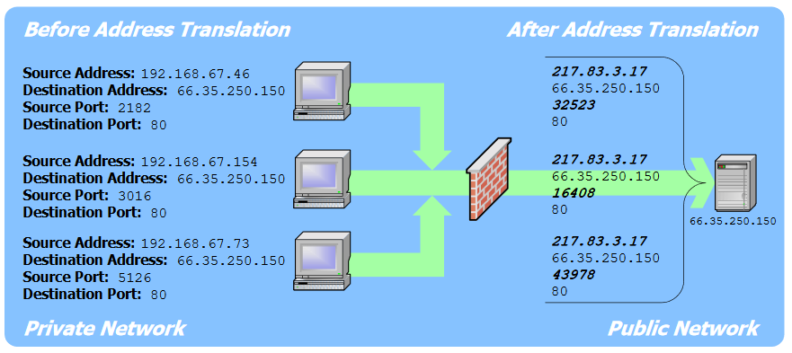

Zoals je al weet heeft iedere host in een TCP/IP computernetwerk een uniek IP-adres. De IPv4 standaard specificeert dat er theoretisch iets meer dan een 4 miljard adressen zijn.
In de praktijk zijn er slechts ongeveer 3 miljard adressen effectief beschikbaar. Dit komt omdat in het verleden er zeer veel IP-adressen werden gereserveerd voor militaire- en testdoeleinden. Door de spectaculaire groei in Azië en de groei in de mobiele telefonie markt werden midden 2011 de laatste IPv4-adressen uitgedeeld aan de telecomoperatoren.
Bijgevolg zijn alle beschikbare IPv4 adressen gereserveerd en ondertussen zijn er veel meer dan 3 miljard hosts verbonden met het Internet.
Om het aantal gebruikte IP adressen te reduceren wordt gebruik gemaakt van Network Address Translation. Hosts (bijvoorbeeld een computer) krijgen van de router op het LAN een privaat IP adres en hosts op het WAN (bijvoorbeeld de router) krijgen van de telecomoperator een publiek IP adres.
De private IP adressen binnen het LAN hoeven niet uniek te zijn over de verschillende netwerken heen want de private adresruimte binnen het LAN is volledig afgescheiden van de publieke adresruimte van het WAN.
Enkel het publiek IP adres van de router is bijgevolg een ingenomen IP adres. Een organisatie kan duizenden hosts aangesloten hebben, met een privaat IP adres, op haar LAN, terwijl er bijvoorbeeld slechts één publiek IP adres wordt ingenomen.
De private IP adresruimte wordt verdeeld in drie blokken:
| Klasse | Bereik | Lengte NW deel | Standaard SNM |
|---|---|---|---|
| A | 10.0.0.0 – 10.255.255.255 | 8 | /8 |
| B | 172.16.0.0 – 172.31.255.255 | 12 | /16 |
| C | 192.168.0.0 – 192.168.255.255 | 16 | /24 |
Afhankelijk van de grootte van het LAN wordt voor adresruimte A (10.x.x.y), B (172.x.y.z) of C (192.168.x.y) gekozen. Dit type IP adres kan enkel voorkomen op een LAN.
Gezien pakketten verstuurd moeten worden tussen verschillende hosts en het source IP adres een privaat IP adres is dat enkel bestaat op het LAN, moet de router de omzetting maken tussen het lokale private IP en het externe publieke IP adres.
Stel dat er drie hosts aanwezig zijn op het LAN en deze zijn allen verbonden met de router. Er zijn dan drie private IP adressen en één publiek IP adres. In de NAT tabel staat dan:
| Privaat IP adres | Publiek IP adres |
|---|---|
| 192.168.67.46 | 217.83.3.17 |
| 192.168.67.154 | 217.83.3.17 |
| 192.168.67.73 | 271.83.3.17 |
Pakketten die verstuurd worden vanaf het LAN krijgen dus als source IP adres 217.83.3.17 en niet 192.168.67.46 of 192.168.67.154 of 192.168.67.73. Hun destination IP adres is bijvoorbeeld 66.35.250.150 .
Een probleem vormt zich wanneer de pakketten terugkeren. Het source IP adres is dan 66.35.250.150 maar het destination IP adres is 217.83.3.17 . Eenmaal aangekomen op de router is er geen manier om na te gaan naar welke private host (192.168.67.46 / 192.168.67.154 / 192.168.67.73) ze doorgestuurd moeten worden.
De oplossing is om naast het source IP adres ook de poort te wijzigen bij het versturen van het pakket. De poortinformatie is iets wat toegevoegd wordt in de transport laag. Voorlopig mag je onthouden dat het MAC adres het adres is van de machine op het LAN, het IP adres is het adres op het WAN en de poort is het adres van de applicatie op de machine.
Iedere private host heeft dan een andere poort. De tabel ziet er dan als volgt uit:
| Privaat IP adres + poort | Publiek IP adres |
|---|---|
| 192.168.67.46 : 32523 | 217.83.3.17 |
| 192.168.67.154 : 16408 | 217.83.3.17 |
| 192.168.67.73 : 43978 | 271.83.3.17 |
Samengevat:

In principe is NAT niet meer nodig met IPv6 gezien er meer dan genoeg IP adressen beschikbaar zijn. Toch is het interessant om NAT te blijven gebruiken.
De redenen hiervoor zijn van economische aard maar ook veiligheid speelt een rol. Een publiek IP adres reserveren kost geld en met NAT heeft een instelling slechts 1 publiek IP nodig. Een privaat IP adres is ook niet zo makkelijk te bereiken van buitenaf en dit maakt het moeilijker om binnen te dringen op een netwerk.